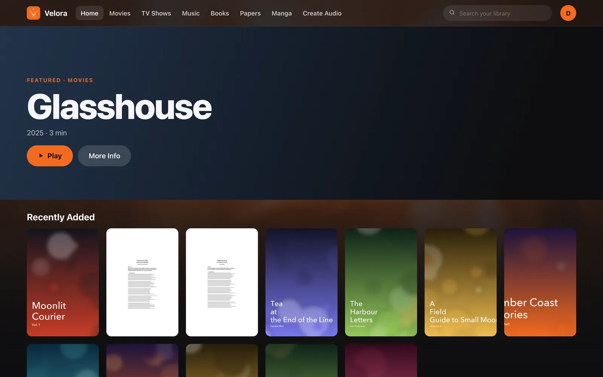
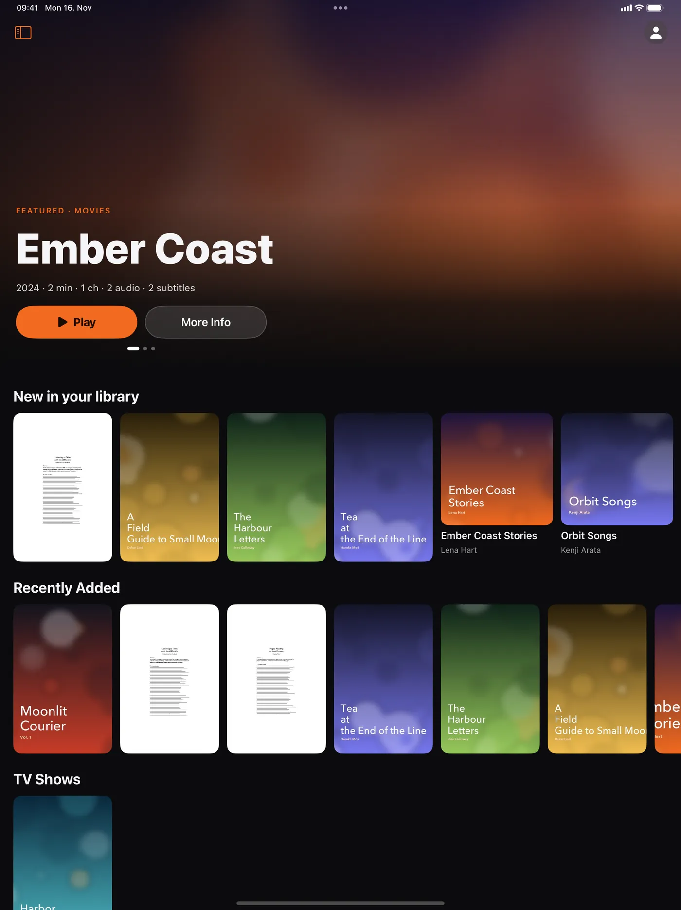
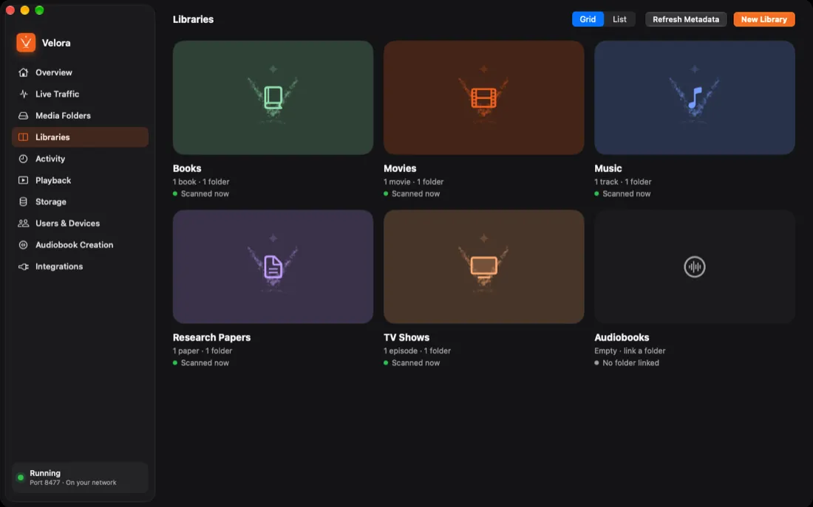

あなたのメディアを、あなたのMacから、どこでも。
Veloraは、お持ちのMacをApple シリコン向けのプライベートなメディアサーバーに変えます。映画、番組、音楽、オーディオブック、本、マンガ、論文を、すべてのApple製デバイスで美しく再生。AI機能はMLXでMac上で動作します。クラウドアカウントも、他社サーバーへのサブスクリプションも不要です。
Velora Server 2.6.20 · Apple シリコン · macOS 26以降 · Appleによる公証済み
iPhone、iPad、Mac、Apple TV、Vision Pro用アプリはTestFlightベータ版です。English、Deutsch、日本語。


ひとつのライブラリを、すべてのApple製デバイスで。
このサイト用のサンプルライブラリで撮影した実際のアプリ画面です。「Preview」と表示された画面は、仕上げ中の機能のデザインです。
iPhone
iPad

Webアプリ
Macサーバーアプリ

Apple TV

CarPlay

できること
映画と番組
トリックプレイのサムネイル、チャプター、すべての音声・字幕トラック、イントロ・あらすじ・クレジットのスキップ、カウントダウン付きの次のエピソード自動再生。
詳しく（英語） →音楽
同期歌詞、ジャケットの色に合わせて音に反応する再生画面、ミュージックホームのピン、アカウントごとのプレイリスト。
詳しく（英語） →オーディオブック
チャプター、再生速度、30秒スキップ、スリープタイマー、読みながら聴けるタイム付きトランスクリプト。
詳しく（英語） →ページめくりのリーダー
Apple Booksのようなページ表示のEPUBリーダー。オリジナル、紙、グレー、夜のテーマ、フォントと行間の選択、ハイライトとメモ。
詳しく（英語） →マンガと論文
右から左、見開き、縦スクロールで読めるマンガ。分野別にまとまった論文と、iPadでのApple Pencilによる書き込み。
詳しく（英語） →AIでオーディオ作成
本、PDF、論文を、ナレーション付きのオーディオブックやホスト同士の会話に。名前の付いた声のキャストが、あなたのMacで生成します。
詳しく（英語） →音楽生成
曲を説明すると、VeloraがMLX上のYuE2-3Bで作詞し歌います。ひと言で作るシンプル、スタイルと歌詞を指定するカスタム。
詳しく（英語） →おすすめ
EmbeddingGemma 2がMac上でタイトル、カバー、そして音声まで理解。「〜を観たあなたへ」や「似た作品」があなた自身の好みから生まれます。
詳しく（英語） →Replay
1年間に観て、聴いて、読んだものを、あなたのサーバー上で集計。共有シートからシェアできます。
詳しく（英語） →Jellyfin・Plex・Navidrome
アプリはJellyfin、Plex、Navidromeのサーバーにもサインインでき、どのサーバーかを自動で判別します。Velora ServerはJellyfinのライブラリ（.nfo、シーズンフォルダ、ローカル画像）をそのまま読み込みます。
詳しく（英語） →マルチユーザー
役割とライブラリごとのアクセス権を持つアカウント。再生位置、プレイリスト、ピン、ハイライト、おすすめは人ごとに分かれます。
詳しく（英語） →ダウンロードとオフライン
映画、エピソード、音楽、オーディオブック、本、論文、マンガをダウンロード。ハイライトとメモはオンラインに戻ると同期されます。
詳しく（英語） →英語・ドイツ語・日本語
すべてのアプリ、Webアプリ、サーバーが3言語に対応し、デバイスの言語に自動で合わせます。
詳しく（英語） →設計からプライベート
Veloraのクラウドもテレメトリも、当社アカウントもありません。メディアと履歴はMacに残り、Veloraがメディアフォルダに書き込むことはありません。
詳しく（英語） →すべてがあなたのMacで動きます。
おすすめ、ナレーション、音楽生成、ライブラリの整理は、MLXによりあなたのApple シリコン上で実行されます。ライブラリ、視聴履歴、ハイライトは、必要な機能をオンにしない限りネットワークの外に出ません。
数分で準備完了。
サーバーをダウンロードし、フォルダをリンクして、各デバイスでアプリを開くだけ。VeloraがMacを自動で見つけます。